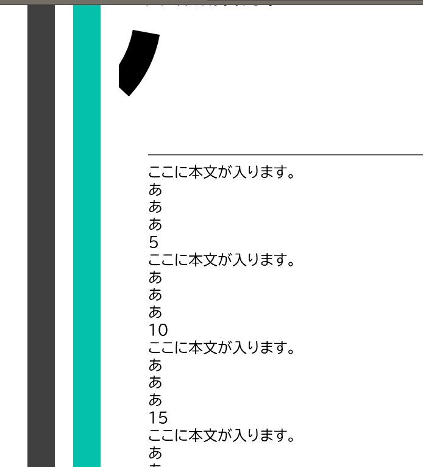

2022年さん。6ヶ月の遅刻です。
皆様あけましておめでとうございます。新年早々申し訳ないですが愚痴を聞いてください。
多重否決の会のコミックマーケット欠席についてのクレームが何故か私のDiscordに来ました。ふざけてんのか。私は多重否決の会に所属もしてないし業務提携もしてません。行徳交通も然り。
とにかく常識的なお願いです。多重否決の会がコミックマーケットを欠席した理由なんて知りません。多重否決の会がコミックマーケットを欠席した理由は多重否決の会に聞いてください。
こんな愚痴はもうさておきにしたいです今年こそはね。2022年の展望をご紹介します。まず、今年こそはホームページのテーマ更新をやりたい。cssとあまりうまくいってなくてなかなか出来ません。どうすりゃいいんだろ...

次。去年はあまり上がってなかったので今年こそはいろんなレベルを上げていきたいです。例えば、現在はゲームサーバーなどの管理業務を行っていません。また、イベントの立案などもほぼ表立ってやってません。
ここから様々な職務を請け負って高いレベルの経験を積んでいきたいなと思います。敢えて言うなら2021年は没落と弊害の年だったと思います。これを来年からは繁栄と自由に転換していきたいです。
私も努力しますが、先方様に於かれましては自らが行った事を改めて再考していただきますよう強くお願い致します。代表様の誠意あるご説明がないと解決に向けて進められません。
行徳交通においても様々な活動を進めていきたいです。例えば電子工作関係のイベントとか。これは高校のときになんとなく感じて、大学で確信したことなんですが、みんなもっと電子技術に興味持ってほしい。
せめてチップ抵抗とかは知ってほしいし、通電してる状態でプラスとマイナスをくっつけたら通電することも知ってほしい。（この２つを知らない人が本当にいた。）来年の活動では気軽にみんなが電子技術に触れられて理解できるようになる活動も進めていきたいです。
まあブログでの挨拶は軽くこんなもんで。動画でもご挨拶していますし。では今年もよろしく。